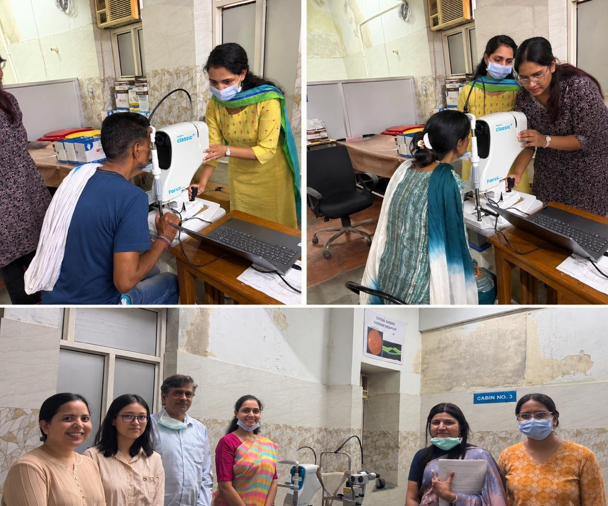
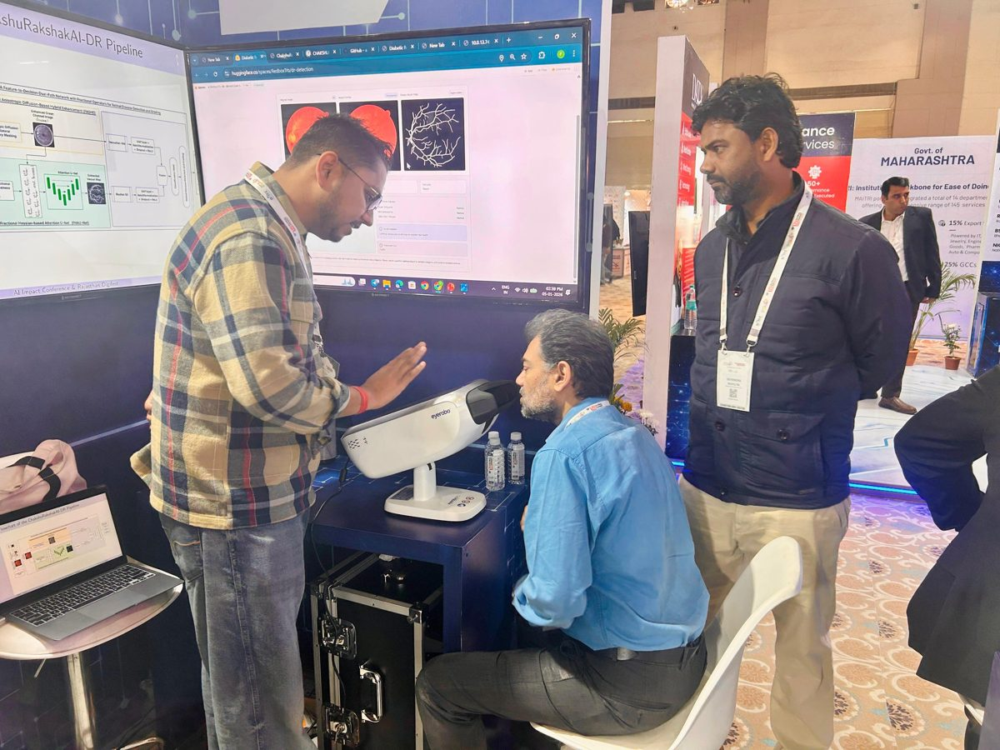
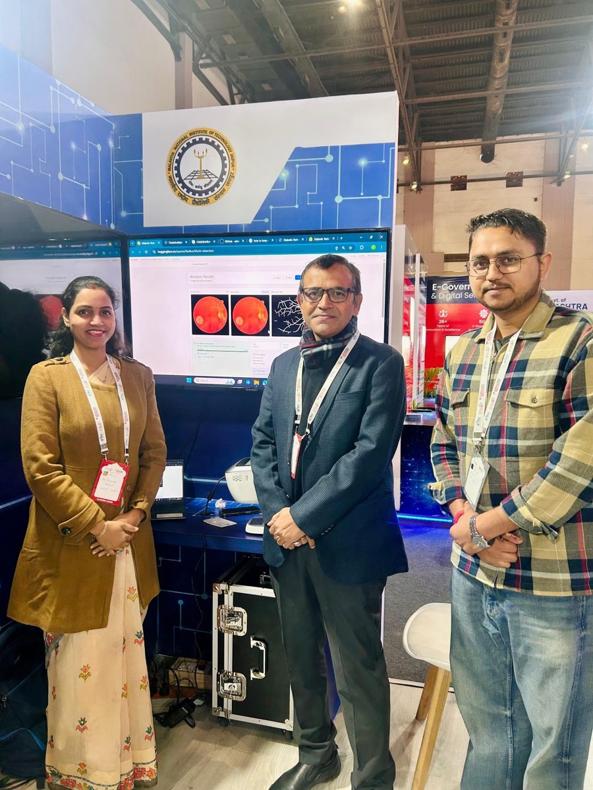
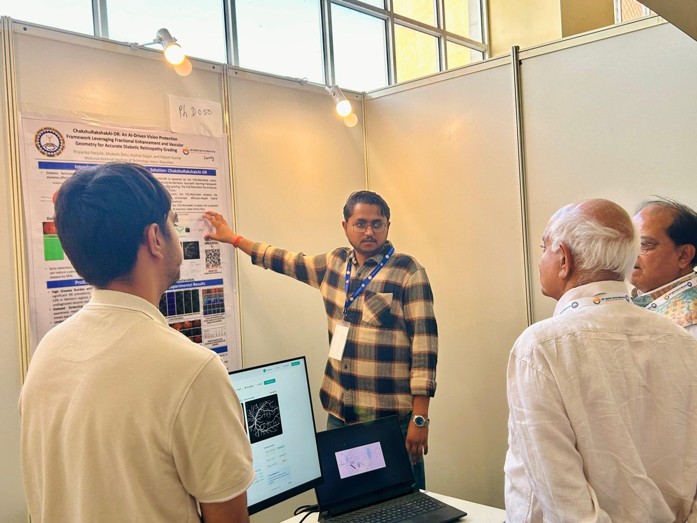
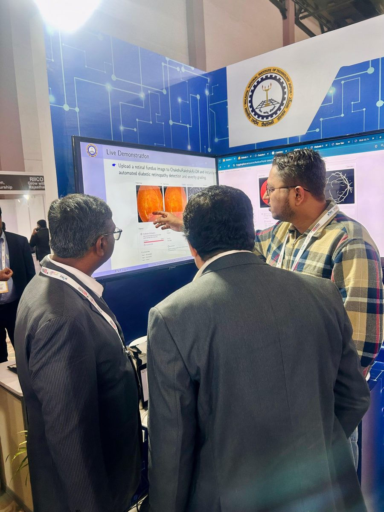
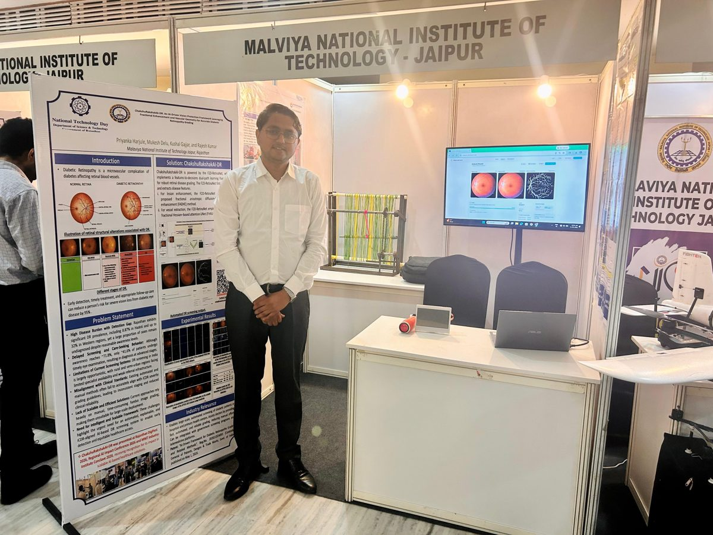
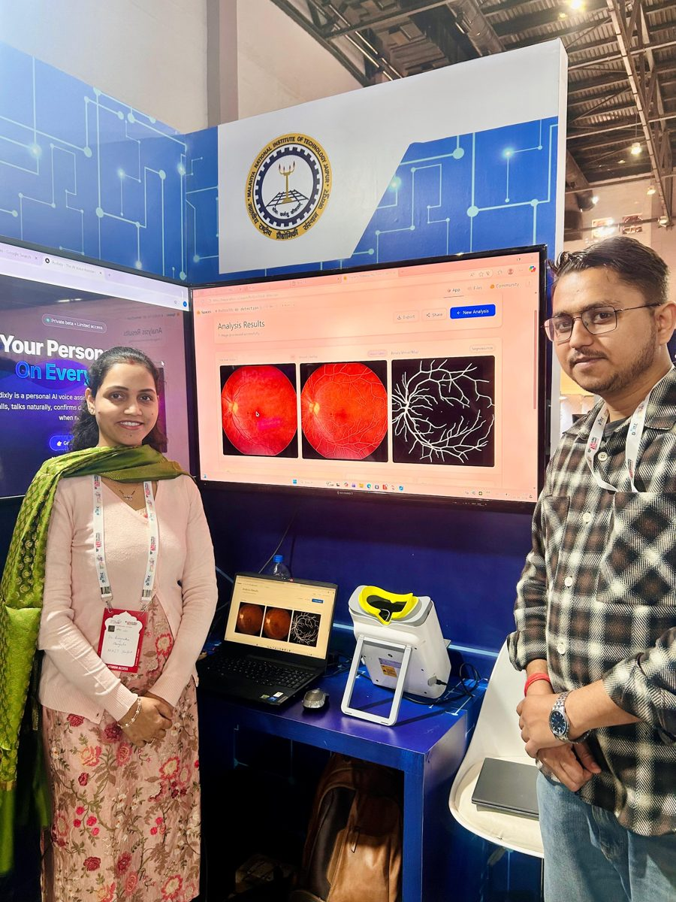

Upload a colour fundus photograph and get an ICDR diabetic retinopathy grade, vessel and lesion maps, and an explainable confidence score in about three seconds. Built on the lab's fractional enhancement and vascular-geometry research.
A screening aid for ophthalmologists and diabetic eye-screening programmes. Results are always reviewed by a qualified ophthalmologist.
Upload a colour fundus photograph and get a result in about three seconds.
A diabetic retinopathy grade on the ICDR 0–4 scale with confidence and a referral recommendation.
Built on the lab's fractional-order image enhancement and retinal vessel research.
The Directorate of Medical & Health Services, Government of Rajasthan (State Health Society, NCO) approved the pilot implementation and clinical validation of ChakshuRakshak AI for screening diabetic retinopathy and diabetic macular edema, in collaboration with the Department of Medical, Health & Family Welfare.
Weekly progress reports go to the State Directorate in alignment with the Madhu Netra AI programme. Final diagnosis and treatment stay with qualified ophthalmologists; the AI assists screening.

ChakshuRakshak AI was showcased at four state and national events in 2026 and recognised for its impact as a scalable AI healthcare solution.






Papers and the patent that ChakshuRakshak AI is built on.
Priyanka Harjule, Mukesh Delu, Rajesh Kumar · Reg. No. 202611024093 · Controller General of Patents, Designs & Trade Marks, Govt. of India
Hospitals, screening programmes and researchers interested in ChakshuRakshak AI can try the demo or write to us at info@chakshurakshakai.com.